7．集合论的基础
波尔查诺在他的《无穷悖论》（Paradoxes of the Infinite，1851）一书（这书在他死后三年才出版）中显示了他是第一个朝着建立集合的明确理论方向采取了积极步骤的人。他维护了实在无穷集合的存在，并且强调了两个集合等价的概念，这就是后来叫做两个集合的元素之间的一一对应关系。这个等价概念，适用于有限集合，同样也适用于无穷集合。他注意到在无穷集合的情形，一个部分或子集可以等价于整体；他并且坚持这个事实必须接受。例如0到5之间的实数通过公式y＝12x/5，可以与0到12之间的实数构成一一对应，虽然这第二个数集包含了第一个数集。对于无穷集合，同样可以指定一种数叫做超限数，使不同的无穷集合有不同的超限数，虽然波尔查诺关于超限数的指定，根据后来康托尔的理论是不正确的。
波尔查诺关于无穷的研究，其哲学意义比数学意义来得多，并且没有充分弄清楚后来称之为集合的势或集合的基数的概念。他同样遇到一些性质在他看来是属于悖论的，这些他都在他的书中提到了。他的结论是，对于超限数无需建立运算，所以不用深入研究它们。
集合论的创建者是康托尔（1845—1918）。他出生于俄国的一个丹麦犹太血统的家庭，和他的父母一起迁到德国。他的父亲力促他学工，因而康托尔在1863年带着这个目的进了柏林大学。在那里他受了魏尔斯特拉斯的影响而转到纯粹数学。他在1869年成为哈雷大学的讲师，1879年成为教授。当他29岁时，他在《数学杂志》（Journal für Mathematik）上发表了关于无穷集合理论的第一篇革命性文章。虽然有些命题为老一些的数学家们指出是错的，但这篇文章总体上的创造性与光彩引起了人们注意。他继续在集合论与超限数方面发表论文直到1897年。
康托尔的工作解决了不少经久未解决的问题，并且颠倒了许多前人的想法，自然就很难被立刻接受。他关于超限序数与基数的思想，引起了权威克罗内克的敌视，粗暴地攻击他的思想达10年以上。康托尔曾一度精神崩溃，但他在1887年又恢复了工作。虽然克罗内克死于1891年，但是他的攻击使数学家们对康托尔的工作抱着怀疑态度。
康托尔的集合理论分散在许多文章中，所以我们不具体指出他的每一个概念和定理出现在哪篇文章中。他的这些文章是从1874年开始(21)分载在《数学年鉴》（Mathematische Annalen）和《数学杂志》（Journal für Mathematik）两杂志上的。康托尔称集合（set）为一些确定的、不同的东西的总体（collection），这些东西人们能意识到，并且能判断一个给定的东西是否属于这个总体。他说，那些认为只有潜无穷集合的人是错误的，并且驳斥了数学家们和哲学家们反对实无穷集合的早期论点。对康托尔来说，如果一个集合能够和它的一部分构成一一对应，它就是无穷的。他的一些集合论的概念，如集合的极限点、导集、第一型集等，是在一篇关于三角级数的文章(22)中定义而且使用了的。这些我们已经在前一章（第6节）中叙述过。一个集合称为是闭的，假如它包含它的全部极限点；是开的，假如它的每一个点都是内点，即每一个点可以包在一个区间内，这区间的点都属于这个集合。一个集合称为完全的，假如它是闭的并且它的每一个点都是它的极限点。他还定义了集合的和与交。虽然康托尔主要考虑的是直线上的点集或实数集合，但他确实把这些集合论的概念推广到了n维欧几里得空间的点集合。
他接着寻求像“大小（size）”这样的概念来区分无穷集合。他和波尔查诺一样，认为一一对应关系是基本的原则。两个能够一一对应的集合称为是等价的或具有相同的势［后来“势（power）”这个名词改成了“基数（cardinal number）”］。两个集合可以有不同的势。如果在M与N两个集合中，N能与M的一个子集构成一一对应，而M不可能与N的任何子集构成一一对应，就说M的势大于N的势。
数集自然是最重要的，所以康托尔用数集来阐明他关于等价或势的概念。康托尔引进了“可列（enumerable）”这个词，对于凡是能和正整数构成一一对应的任何一个集合都称之为可列集合。这是最小的无穷集合。然后他证明了有理数集合是可列的。他在1874年给出了一个证明(23)；他的第二个证明(24)是现在普遍采用的，我们就来描述它。
有理数排列成如下形式：
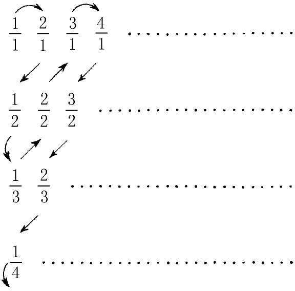
要注意的是，那些在同一个对角线方向的分式，其分子与分母的和是相同的。现在我们从
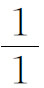
开始随着箭头所示的方向依次指定1对应于1/1，2对应于2/1，3对应于1/2，4对应于1/3等。每一个有理数必将在某一步对应于一个被指定的有限的正整数。于是上面列出的有理数集合（其中有些出现许多次）与正整数集合构成一一对应。于是把重复的去掉后，这个有理数集合仍是一个无穷集合，从而必然仍是可列的，因为可列集合是最小的无穷集合。更惊人的是，在上面引到的那篇1874年的文章中，康托尔证明了所有代数数全体构成的集合也是可列的。这里所谓代数数就是满足某一个代数方程
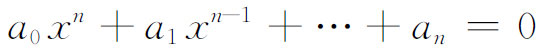
的数，其中aj都是整数。
为证明这一点，康托尔对任一个n次代数方程指定一个数（叫做高）N如下：
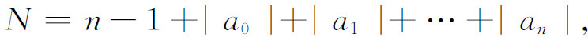
其中ai都是这个方程的系数。数N是一个正整数。对每一个N，以N为高的代数方程是有限个，它们的全部解也是有限个，除去重复的以外，所对应的代数数也是有限个，设为
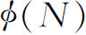
个。例如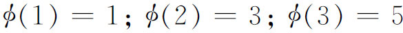
。他从N＝1开始，对于所对应的代数数从1到n1给以标号；对应于N＝2的代数数从n1＋1到n2给以标号；依次下去。由于每一个代数数总一定会编到号，并且必与唯一的一个正整数相对应，从而所有代数数的集合是可列的。康托尔在1873年和戴德金的一次通信中提出过这样的问题：实数集合是否能和正整数集合构成一一对应。几个星期后他自己回答了这个问题，认为是不可能的。他给出两个证明：第一个证明（在上面提到过的1874年那篇文章中）比第二个证明(25)复杂得多，今天经常采用的就是这第二个证明．它具有这样的优越性，正如康托尔自己指出的，即不依赖于无理数的技术性考虑。
康托尔关于实数不是可列的第二个证明，是从假定0与1之间的实数是可列的这个前提出发的。让我们把每一个这样的实数写成无穷小数，例如把1/2写成0.499-9…的形式。假如它们是可列的，那么我们就能够对每一个数指定一个正整数n：
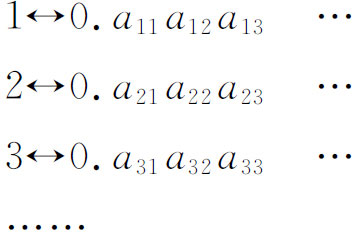
现在我们定义一个在0到1之间的实数如下：令
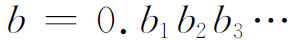
，其中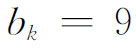
若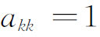
，而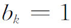
若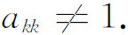
这个实数不同于上表中所列的任何一个实数，而这和假定上表已包含所有从0到1之间的实数是矛盾的。由于实数是不可列的而代数数是可列的，必定有超越数存在。这是康托尔关于超越数的非结构性存在的证明，这应与刘维尔实际构造出超越数（第2节）相比较。
在1874年康托尔考虑着一条直线上的点和整个
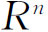
（n维空间）中的点的对应关系，并企图证明这两个集合不可能构成一一对应关系。三年之后，他证明这样的对应关系是存在的，他写信给戴德金说(26)：“我看到了它，但我简直不能相信它。”用来构成这个一一对应的思想(27)能够立刻显示出来，如果我们把单位正方形中的点和（0，1）线段的点能构成这样的对应关系的话。设（x，y）是单位正方形中的一个点而z是单位区间中的一个点。又设x和y都表示成无穷小数，即把有限小数写成9的无限循环。我们把x与y的小数分成一组一组，每一组终止在第一个非零的数字上。例如
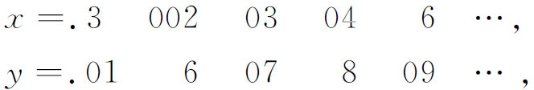
作
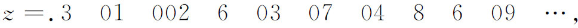
其中的各组数字是：先是x的第一组，然后是y的第一组，并依次进行下去。如果两个x或两个y有不同的小数位数字，则对应的两个z也必不同。从而对于每一对（x，y）有唯一的一个z可以确定。对于任意给定的一个z，把z的小数像上面那样分成一组一组，并由此把上述步骤倒过去作出x与y，则不同的两个z将得出不同的两对（x，y），从而对每一个z有唯一的（x，y）可以确定。方才描述的一一对应关系是不连续的；粗略地说，对应于彼此靠近的z点的（x，y）点不一定靠近，反之亦然。
杜波依斯-雷蒙反对这个证明(28)：“这看来与普通常识相矛盾。事实上，这只是这样一种推理的结论，这种推理允许空想的虚构来介入，并且让这些虚构——它们甚至不是量的表达式的极限——充当真正的量。这就是悖论所在。”